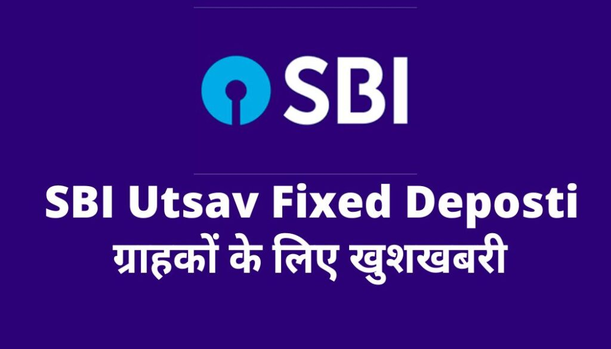
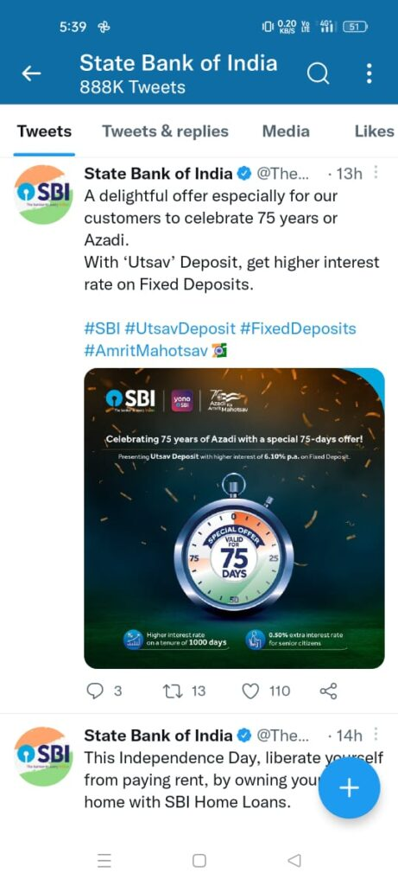

आज़ादी के 76th वर्षगाँठ के मौक़े ओर देश के सबसे बड़ी क़र्ज़ देने वाला बैंक State Bank of India (SBI) ने अपने ग्राहकों के लिए Utsav Deposit ,Saving Plan की शुरुआत की है ।
किस कारण से Utsav Deposite Plan लाया गया है :-
यह Utsav Deposit Plan ख़ास करके state bank of Indian ने अपने उन ग्राहकों को तौफे के रूप में दिया है जो आज़ादी के 76th वर्षगाँठ की ख़ुशी माना रहे हैं ।
Utsav Deposit Plan से क्या फ़ायदा होगा :-
इस Fixed Deposit plan के तहत State Bank of India (SBI) के ग्राहकों को Fixed Deposite करवाने पर अधिक से अधिक ब्याज दर मिलेगा ।
Utsav Deposit Plan से कितना Interest Rate मिलेगा :-
Offer अवधि में अगर कोई भी State Bank of India (SBI) का ग्राहक इस प्लान के तहत बैंक में FD(Fixed Deposit) करवा कर 6.10% का Interest ले सकता है ,वही इसी Utsav Deposit प्लान के तहत Senior Setision को 0.50% ज़्यादा यानी की 6.60% का Interest Rate मिलेगा ।
{kind=link}

Utsav Deposit का कब तक ले सकते हैं लाभ :-
State Bank of India (SBI) के official Twitter पेज पर किए गए Twit के मुताबिक़ यह Offer 75 दिनो के लिए होने वाली है यानी (75 Years Of Azadi with a Special 75 Days Offers).
कौन ले सकते हैं Utsav Deposit का लाभ ?
कोई भी State Bank Of India के ग्राहक जिनका SBI में खाता हैं इस प्लान का फ़ायदा ले सकते हैं ।आपको सिर्फ़ अपने बैंक जाना है और जितने पैसे FD करने हैं उतने का FD Utsav Deposit प्लान के तहत करवा लेना है ।
{kind=link}
